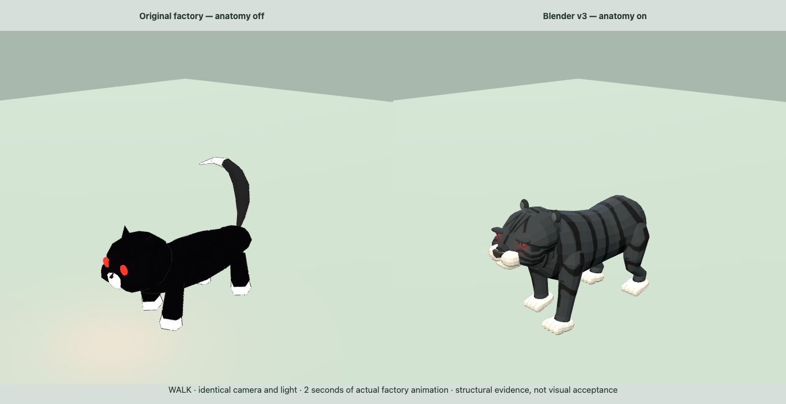
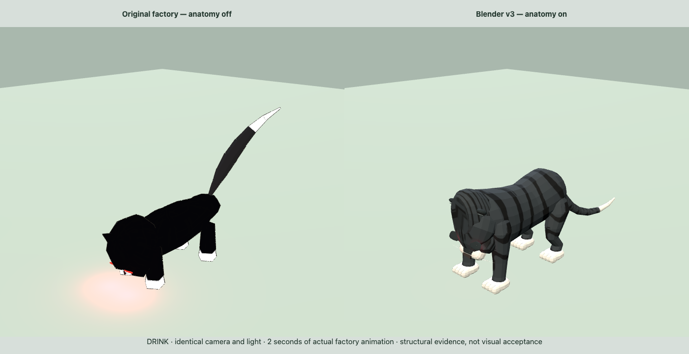

Matched camera and light. Real factory idle, walk and drink callbacks were advanced for two seconds. This is structural and comparison evidence, not final visual or gameplay approval.


Full browser check report